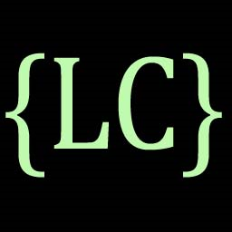

|  |
Line Catcher v1.1Line Catcher (LC) is an advanced programmable log parsing tool aimed to simplify and save time on viewing, searching, and parsing large text files. Created by Alexandr Sachkov Modification and redistribution of the program is allowed under the terms of GPL v3 or later |